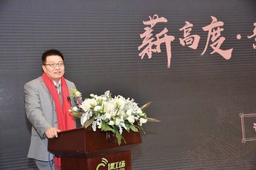

 课工场——更可靠的IT就业教育 始源于北京大学优秀校办企业，拥有19年企业历史，培养超过85万IT行业精英的北大青鸟集团。
汇聚企业领袖、行业一线大咖、技术大牛及顶尖学府名师，面向大学生及适龄人群，通过课程、师资、教材、平台及服务全方位支撑，提供专业、贴近目标人群的产品及服务，满足人群对就业教育产品的挑剔和高需求，保证学员就业效果。 目前课工场筛选青鸟体系内致力于大学生市场的实力雄厚的校区，在全国核心城市建设课工场校区，学员已经超过5万人。
课工场自主研发的学习平台已经稳定运行7年，学员利用课工场网站，APP等学习端进行学习，将预习和复习放到线上，成为线下学习的必要补充；老师可以利用平台进行直播、录播授课，在线测试，在线实验，将整个学练评测的过程放在线上，丰富了教学手段。同时，平台利用累积多年20多亿条学员学习行为大数据，实现学员个性化学习，提升学员学习效率，为学员最终高效完成学业获得就业机会提供重要支持